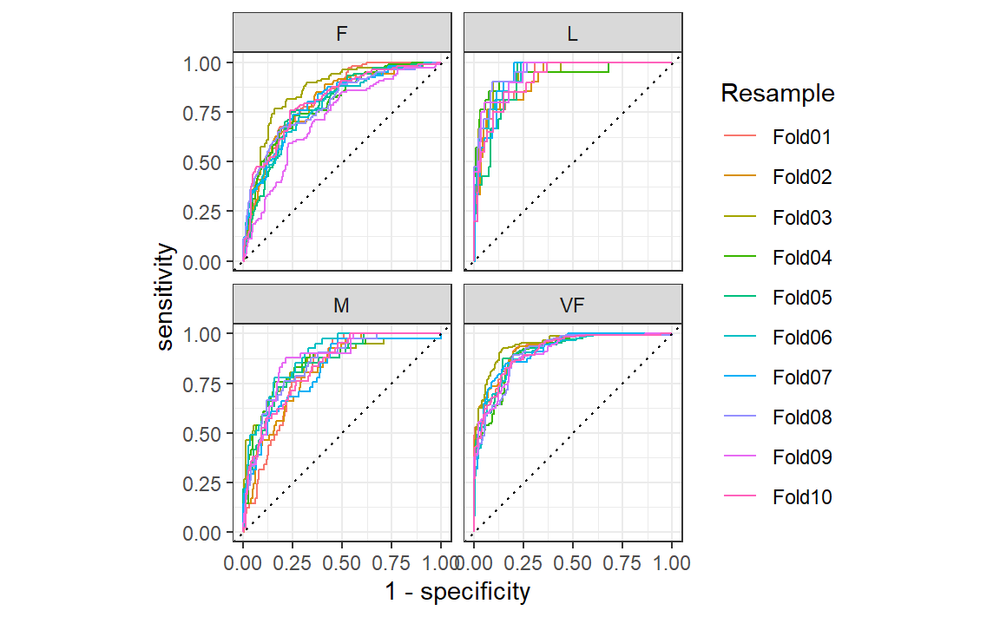

#> ── Attaching core tidyverse packages ───────────────────── tidyverse 2.0.0 ──
#> ✔ dplyr 1.1.4 ✔ readr 2.1.5
#> ✔ forcats 1.0.0 ✔ stringr 1.5.1
#> ✔ ggplot2 3.5.2 ✔ tibble 3.2.1
#> ✔ lubridate 1.9.4 ✔ tidyr 1.3.1
#> ✔ purrr 1.1.0
#> ── Conflicts ─────────────────────────────────────── tidyverse_conflicts() ──
#> ✖ dplyr::filter() masks stats::filter()
#> ✖ dplyr::lag() masks stats::lag()
#> ℹ Use the conflicted package (<http://conflicted.r-lib.org/>) to force all conflicts to become errors9 Judging Model Effectiveness
一旦我们构建好了模型，我们需要知道它的效果如何。定量地评估模型有效性能让我们理解模型、比较不同的模型，或者调整模型以提升性能。在tidymodels中，我们重点关注经验验证方法；这通常意味着以未被用于创建模型的数据为基础来衡量有效性。该数据可以是测试集或者重抽样数据（见第10章），在本章中，我们将通过使用测试集来说明经验验证的必要性。请记住，正如第5.1节中所解释的，测试集只能使用一次。
在判断模型效果时，指标的选择可能至关重要。在后面的章节中，某些模型参数将通过经验验证进行优化，并且会使用一个主要的性能指标来选择最佳的子模型。选择错误的指标很容易导致意想不到的后果。例如，回归模型的两个常见指标是均方根误差（RMSE）和决定系数（\(R^2\)），前者衡量的是准确性，而后者衡量的是相关性，这两者并不一定是一回事。Figure 1 展示了两者之间的区别。
针对均方根误差（RMSE）优化的模型变异性更大，但在结果的整个范围内具有相对一致的准确性。针对决定系数（\(R^2\)）优化的模型，其观测值和预测值之间的相关性更强，但在尾部表现不佳。
本章将介绍yardstick包（tidymodels核心包之一），主要用于衡量模型性能。在介绍如何使用之前，让我们探讨一下，当模型侧重于推断而非预测时，使用性能指标进行实证验证是否有价值。
Performance Metrics and Inference
任何模型的有效性取决于该模型的使用方式。推断模型主要用于理解关系，通常会着重强调概率分布的选择（及有效性）以及其他定义该模型的生成特性。相比之下，对于主要用于预测的模型，预测能力至关重要，而对潜在统计特性的其他考量可能没那么重要。预测能力通常由我们的预测与观测数据的接近程度决定，即模型预测与实际结果的一致性。本章将聚焦于可用于衡量预测能力的函数。不过，我们对那些开发推断模型的人的建议是，即便模型的主要目标不是预测，也应使用这些技术。
推断统计学实践中一个长期存在的问题是，由于纯粹聚焦于推断，没有评估模型的可信度。例如，Craig–Schapiro等人（2011）对333名阿尔茨海默病患者的数据进行分析，以确定影响认知障碍的因素。该分析利用已知的风险因素如年龄、性别和载脂蛋白E基因型（分类变量，该基因有三个主要变体的六种可能组合）等，构建了一个逻辑回归模型，其中结果是二元的（有障碍/无障碍）。已知载脂蛋白E与阿尔茨海默病存在关联（Jungsu、Basak和Holtzman，2009）。
一种肤浅但并不少见的分析方法是拟合一个包含主效应和交互作用的大型模型，然后使用统计检验来找到在某个预先定义的水平上具有统计显著性的最小模型项集。如果使用包含三个因素及其双向和三向交互作用的完整模型，那么初始阶段将使用序贯似然比检验（sequential likelihood ratio tests）来检验交互作用（Hosmer and Lemeshow，2000）。让我们针对阿尔茨海默病的数据示例逐步介绍这种方法：
当将包含所有双向交互项的模型与额外包含三向交互项的模型进行比较时，似然比检验得出的p值为0.888。这意味着，没有证据表明与三向交互项相关的四个额外模型项能够解释数据中足够多的变异，因此不应将它们保留在模型中。
接下来，双向交互作用同样会与无交互作用的模型进行比较评估。此处的p值为0.0382。这一数值有些接近临界值，但考虑到样本量较小，谨慎的结论应该是：有证据表明，在10种可能的双向交互作用中，有一些对模型而言是重要的。
从这里开始，我们将对结果进行一些解释。交互作用的讨论尤为重要，因为它们可能会引发有趣的生理学或神经学假设，供进一步探索。
尽管这种分析策略比较浅显，但在实际应用和文献中都很常见。如果从业者在数据分析方面接受的正规培训有限，情况尤其如此。
这种方法中缺失的一项信息是该模型与实际数据的拟合程度。利用第10章讨论的重采样方法，我们可以估计该模型的准确率约为73.4%。准确率通常不是衡量模型性能的理想指标，我们在这里使用它是因为它易于理解。如果该模型与数据的契合度为73.4%，我们应该相信它得出的结论吗？或许我们会这么认为，直到我们意识到数据中无障碍患者的基准率为72.7%（无障碍患者的比例）。这意味着，尽管我们进行了统计分析，但这个双因素模型似乎只比一种简单的启发式方法（无论观察到的数据如何，总是预测患者为无障碍）好0.8%。也就是说，对模型统计特征的优化并不意味着该模型能很好地拟合数据。即使对于纯粹的推断模型，推断结果也应附带某种程度的数据保真度衡量指标。借助这一点，分析结果的使用者可以校准他们对结果的预期。
在本章的剩余部分，我们将讨论通过经验验证来评估模型的一般方法。这些方法按结果数据的性质分组：纯数值型、二元类别型以及三个或更多类别水平型。
Regression Metrics
回想第6.3节，tidymodels的预测函数会生成包含预测值列的tibble（一种数据框）。这些列有着统一的名称，而yardstick包中用于生成性能指标的函数也具有统一的接口。这些函数基于数据框，而非基于向量，其通用语法如为：function(data, truth, ...)，其中，data是一个数据框或tibble，truth是包含观测结果值的列。省略号或其他参数用于指定包含预测值的列。
为了说明这一点，让我们以第8.8节中的模型为例。这个名为lm_fit的模型结合了线性回归模型与一个预测因子集，该预测因子集补充了经度和纬度的交互项及样条函数。它是根据一个训练集（名为ames_train）创建的。尽管我们不建议在建模过程的这个阶段使用测试集，但在这里会用它来演示功能和语法。数据框ames_test包含588处房产的数据。首先，让我们生成预测结果：
library(tidymodels)
#> ── Attaching packages ─────────────────────────────────── tidymodels 1.4.1 ──
#> ✔ broom 1.0.9 ✔ rsample 1.3.1
#> ✔ dials 1.4.2 ✔ tailor 0.1.0
#> ✔ infer 1.0.9 ✔ workflows 1.3.0
#> ✔ modeldata 1.5.1 ✔ workflowsets 1.1.1
#> ✔ parsnip 1.3.3 ✔ yardstick 1.3.2
#> ✔ recipes 1.3.1
#> ── Conflicts ────────────────────────────────────── tidymodels_conflicts() ──
#> ✖ scales::discard() masks purrr::discard()
#> ✖ dplyr::filter() masks stats::filter()
#> ✖ recipes::fixed() masks stringr::fixed()
#> ✖ dplyr::lag() masks stats::lag()
#> ✖ yardstick::spec() masks readr::spec()
#> ✖ recipes::step() masks stats::step()
data(ames)
ames <- mutate(ames, Sale_Price = log10(Sale_Price))
set.seed(502)
ames_split <- initial_split(ames, prop = 0.80, strata = Sale_Price)
ames_train <- training(ames_split)
ames_test <- testing(ames_split)
ames_rec <-
recipe(Sale_Price ~ Neighborhood + Gr_Liv_Area + Year_Built + Bldg_Type +
Latitude + Longitude, data = ames_train) %>%
step_log(Gr_Liv_Area, base = 10) %>%
step_other(Neighborhood, threshold = 0.01) %>%
step_dummy(all_nominal_predictors()) %>%
step_interact(~ Gr_Liv_Area:starts_with("Bldg_Type_")) %>%
step_ns(Latitude, Longitude, deg_free = 20)
lm_model <- linear_reg() %>% set_engine("lm")
lm_wflow <-
workflow() %>%
add_model(lm_model) %>%
add_recipe(ames_rec)
lm_fit <- fit(lm_wflow, ames_train)
ames_test_res <- predict(lm_fit, new_data = ames_test %>% select(-Sale_Price))
ames_test_res
#> # A tibble: 588 × 1
#> .pred
#> <dbl>
#> 1 5.07
#> 2 5.31
#> 3 5.28
#> 4 5.33
#> 5 5.30
#> 6 5.24
#> # ℹ 582 more rows回归模型的预测数值结果被命名为.pred。让我们将预测值与其对应的观测结果值进行匹配：
ames_test_res <- bind_cols(ames_test_res, ames_test %>% select(Sale_Price))
ames_test_res
#> # A tibble: 588 × 2
#> .pred Sale_Price
#> <dbl> <dbl>
#> 1 5.07 5.02
#> 2 5.31 5.39
#> 3 5.28 5.28
#> 4 5.33 5.28
#> 5 5.30 5.28
#> 6 5.24 5.26
#> # ℹ 582 more rows我们可以看到这些数值大多看起来比较接近，但我们尚未对模型的表现有一个定量的了解，因为我们还没有计算任何性能指标。需要注意的是，预测结果和观测结果的单位都是以10为底的对数。即使预测结果是以原始单位报告的，最好还是在转换后的尺度上（如果使用了转换的话）分析这些预测结果。
在计算指标之前，让我们绘制上面的结果如 Figure 2 中所示：
ggplot(ames_test_res, aes(x = Sale_Price, y = .pred)) +
# Create a diagonal line:
geom_abline(lty = 2) +
geom_point(alpha = 0.5) +
labs(y = "Predicted Sale Price (log10)", x = "Sale Price (log10)") +
# Scale and size the x- and y-axis uniformly:
coord_obs_pred()有一处低价房产的预测值严重偏高，也就是说，它的位置远在那条虚线上方。
让我们使用rmse()函数计算该模型的均方根误差：
rmse(ames_test_res, truth = Sale_Price, estimate = .pred)
#> # A tibble: 1 × 3
#> .metric .estimator .estimate
#> <chr> <chr> <dbl>
#> 1 rmse standard 0.0736这向我们展示了yardstick函数输出的标准格式。对于数值型结果的指标，.estimator列的值通常为“standard”。下一节将展示该列具有不同值的示例。
为了同时计算多个指标，我们可以创建一个指标集。让我们添加\(R^2\)和平均绝对误差：
ames_metrics <- metric_set(rmse, rsq, mae)
ames_metrics(ames_test_res, truth = Sale_Price, estimate = .pred)
#> # A tibble: 3 × 3
#> .metric .estimator .estimate
#> <chr> <chr> <dbl>
#> 1 rmse standard 0.0736
#> 2 rsq standard 0.836
#> 3 mae standard 0.0549这种整洁的数据格式将指标垂直堆叠。均方根误差和平均绝对误差这两个指标都与结果处于同一量级（在我们的示例中是log10(Sale_Price)），它们用于衡量预测值与观测值之间的差异。\(R^2\)的值衡量的是预测值与观测值之间的平方相关性，因此该值越接近1越好。
yardstick包中没有用于计算调整后\(R^2\)的函数。这种决定系数的修正形式通常用于使用拟合模型的数据（训练集）来评估模型的情况。tidymodels中没有完全支持这一指标，因为使用与拟合模型不同的独立数据集（测试集）来计算性能总是更好的方法。
Binary Classification Metrics
为了说明衡量模型性能的其他方法，我们将换一个不同的例子。modeldata包（tidymodels中的另一个包）包含来自一个测试数据集的示例预测结果，该数据集有两个类别（“Class1”和“Class2”）：
data(two_class_example)
tibble(two_class_example)
#> # A tibble: 500 × 4
#> truth Class1 Class2 predicted
#> <fct> <dbl> <dbl> <fct>
#> 1 Class2 0.00359 0.996 Class2
#> 2 Class1 0.679 0.321 Class1
#> 3 Class2 0.111 0.889 Class2
#> 4 Class1 0.735 0.265 Class1
#> 5 Class2 0.0162 0.984 Class2
#> 6 Class1 0.999 0.000725 Class1
#> # ℹ 494 more rows第二列和第三列是测试集的预测类别概率，而predicted是离散预测值。
对于硬类别预测，多种yardstick函数很有帮助：
# A confusion matrix:
conf_mat(two_class_example, truth = truth, estimate = predicted)
#> Truth
#> Prediction Class1 Class2
#> Class1 227 50
#> Class2 31 192
# Accuracy:
accuracy(two_class_example, truth, predicted)
#> # A tibble: 1 × 3
#> .metric .estimator .estimate
#> <chr> <chr> <dbl>
#> 1 accuracy binary 0.838
# Matthews correlation coefficient:
mcc(two_class_example, truth, predicted)
#> # A tibble: 1 × 3
#> .metric .estimator .estimate
#> <chr> <chr> <dbl>
#> 1 mcc binary 0.677
# F1 metric:
f_meas(two_class_example, truth, predicted)
#> # A tibble: 1 × 3
#> .metric .estimator .estimate
#> <chr> <chr> <dbl>
#> 1 f_meas binary 0.849
# Combining these three classification metrics together
classification_metrics <- metric_set(accuracy, mcc, f_meas)
classification_metrics(two_class_example, truth = truth, estimate = predicted)
#> # A tibble: 3 × 3
#> .metric .estimator .estimate
#> <chr> <chr> <dbl>
#> 1 accuracy binary 0.838
#> 2 mcc binary 0.677
#> 3 f_meas binary 0.849马修斯相关系数（Matthews correlation coefficient，mcc()）和F1分数（F1 metric，f_meas()）都能对混淆矩阵进行总结，但与衡量正负例质量的mcc()相比，f_meas()指标更侧重于正类，即我们所关注的事件。对于像本示例这样的二分类数据集，yardstick函数有一个名为event_level的标准参数，用于区分正负水平。默认情况下（我们在本代码中使用的就是默认设置），结果因子的第一个水平是我们关注的事件。在这一点上，R函数存在一些不一致性：有些函数使用第一层级，而另一些则使用第二层级来表示关注的事件。我们认为第一层级最为重要，这更符合直觉。将结果编码为0/1（在这种情况下，第二个值代表事件）催生了第二层级的逻辑，遗憾的是，这种逻辑在一些包中仍然存在。然而，tidymodels（以及许多其他R包）要求将分类结果编码为因子，因此，将第二层级作为事件的传统理由就变得无关紧要了。
举一个第二层级为事件的例子：
f_meas(two_class_example, truth, predicted, event_level = "second")
#> # A tibble: 1 × 3
#> .metric .estimator .estimate
#> <chr> <chr> <dbl>
#> 1 f_meas binary 0.826在这个输出中，.estimator的值“binary”表明将使用二分类的标准公式。
有许多分类指标使用预测概率作为输入，而非硬性类别预测。例如，受试者工作特征（ROC）曲线会在一系列不同的事件阈值上计算敏感性和特异性，且不使用预测类别列。这种方法有两个yardstick函数：roc_curve()用于计算构成ROC曲线的数据点，roc_auc()用于计算曲线下面积。
这些类型的度量函数的接口使用...参数占位符来传入适当的类别概率列。对于二分类问题，感兴趣事件的概率列会被传入函数中：
two_class_curve <- roc_curve(two_class_example, truth, Class1)
two_class_curve
#> # A tibble: 502 × 3
#> .threshold specificity sensitivity
#> <dbl> <dbl> <dbl>
#> 1 -Inf 0 1
#> 2 1.79e-7 0 1
#> 3 4.50e-6 0.00413 1
#> 4 5.81e-6 0.00826 1
#> 5 5.92e-6 0.0124 1
#> 6 1.22e-5 0.0165 1
#> # ℹ 496 more rows
roc_auc(two_class_example, truth, Class1)
#> # A tibble: 1 × 3
#> .metric .estimator .estimate
#> <chr> <chr> <dbl>
#> 1 roc_auc binary 0.939two_class_curve对象可用于ggplot调用中以可视化该曲线，如 Figure 3 所示。存在一个autoplot()方法，可处理相关细节：
autoplot(two_class_curve)如果曲线接近对角线，那么该模型的预测不会比随机猜测好。由于曲线位于左上角，我们可以看出我们的模型在不同阈值下都表现良好。
还有许多其他使用概率估计的函数，包括gain_curve()、lift_curve()和pr_curve()。
Multiclass Classification Metrics
那么具有三个或更多类别的数据该如何处理呢？为了说明这一点，让我们来探讨一个不同的示例数据集，该数据集有四个类别：
data(hpc_cv)
tibble(hpc_cv)
#> # A tibble: 3,467 × 7
#> obs pred VF F M L Resample
#> <fct> <fct> <dbl> <dbl> <dbl> <dbl> <chr>
#> 1 VF VF 0.914 0.0779 0.00848 0.0000199 Fold01
#> 2 VF VF 0.938 0.0571 0.00482 0.0000101 Fold01
#> 3 VF VF 0.947 0.0495 0.00316 0.00000500 Fold01
#> 4 VF VF 0.929 0.0653 0.00579 0.0000156 Fold01
#> 5 VF VF 0.942 0.0543 0.00381 0.00000729 Fold01
#> 6 VF VF 0.951 0.0462 0.00272 0.00000384 Fold01
#> # ℹ 3,461 more rows和之前一样，存在观测结果列和预测结果列，以及每个类别的预测概率列。（这些数据还包括一个Resample列。这些hpc_cv结果是与10折交叉验证相关的样本外预测。目前，这一列将被忽略，我们会在第10章深入讨论重抽样。）
使用离散类别预测的指标函数与其二元对应函数相同：
accuracy(hpc_cv, obs, pred)
#> # A tibble: 1 × 3
#> .metric .estimator .estimate
#> <chr> <chr> <dbl>
#> 1 accuracy multiclass 0.709
mcc(hpc_cv, obs, pred)
#> # A tibble: 1 × 3
#> .metric .estimator .estimate
#> <chr> <chr> <dbl>
#> 1 mcc multiclass 0.515请注意，在这些结果中，列出了一个“multiclass”.estimator。与“binary”类似，这表明使用了适用于具有三个或更多类别水平的结果的公式。马修斯相关系数最初是为两类情况设计的，但已被扩展到具有更多类别水平的情况。
有一些方法可以将旨在处理仅有两个类别的结果的指标扩展到用于有两个以上类别的结果。例如，像灵敏度这样用于衡量真阳性率的指标，根据定义，它是特定于两个类别的（即“事件”和“非事件”）。在我们的示例数据中，如何使用这个指标呢？
有一些包装方法可用于将敏感性应用于我们的四分类结果。这些方法包括宏平均、加权宏平均和微平均：
宏平均法使用标准的二分类统计数据计算一组一对一的指标，然后对这些指标进行平均。
宏加权平均法的做法相同，但平均值会按每个类别的样本数量进行加权。
微平均会计算每个类别的贡献，对这些贡献进行汇总，然后从汇总结果中计算出一个单一的指标。
有关将分类指标扩展到具有两个以上类别的结果的更多信息，请参见Wu和Zhou（2017）以及Opitz和Burst（2019）。
以灵敏度为例，常见的二分类计算方法是正确预测的事件数量除以实际事件的数量。这些平均方法的手动计算如下：
class_totals <-
count(hpc_cv, obs, name = "totals") %>%
mutate(class_wts = totals / sum(totals))
class_totals
#> obs totals class_wts
#> 1 VF 1769 0.51023940
#> 2 F 1078 0.31093164
#> 3 M 412 0.11883473
#> 4 L 208 0.05999423
cell_counts <-
hpc_cv %>%
group_by(obs, pred) %>%
count() %>%
ungroup()
# Compute the four sensitivities using 1-vs-all
one_versus_all <-
cell_counts %>%
filter(obs == pred) %>%
full_join(class_totals, by = "obs") %>%
mutate(sens = n / totals)
one_versus_all
#> # A tibble: 4 × 6
#> obs pred n totals class_wts sens
#> <fct> <fct> <int> <int> <dbl> <dbl>
#> 1 VF VF 1620 1769 0.510 0.916
#> 2 F F 647 1078 0.311 0.600
#> 3 M M 79 412 0.119 0.192
#> 4 L L 111 208 0.0600 0.534
# Three different estimates:
one_versus_all %>%
summarize(
macro = mean(sens),
macro_wts = weighted.mean(sens, class_wts),
micro = sum(n) / sum(totals)
)
#> # A tibble: 1 × 3
#> macro macro_wts micro
#> <dbl> <dbl> <dbl>
#> 1 0.560 0.709 0.709值得庆幸的是，无需手动实现这些平均方法。相反，yardstick函数可以通过estimator参数自动应用这些方法：
sensitivity(hpc_cv, obs, pred, estimator = "macro")
#> # A tibble: 1 × 3
#> .metric .estimator .estimate
#> <chr> <chr> <dbl>
#> 1 sensitivity macro 0.560
sensitivity(hpc_cv, obs, pred, estimator = "macro_weighted")
#> # A tibble: 1 × 3
#> .metric .estimator .estimate
#> <chr> <chr> <dbl>
#> 1 sensitivity macro_weighted 0.709
sensitivity(hpc_cv, obs, pred, estimator = "micro")
#> # A tibble: 1 × 3
#> .metric .estimator .estimate
#> <chr> <chr> <dbl>
#> 1 sensitivity micro 0.709在处理概率估计时，存在一些具有多类别类似物的指标。例如，Hand and Till（2001）确定了一种用于ROC曲线的多类别技术。在这种情况下，必须将所有类别概率列提供给该函数：
roc_auc(hpc_cv, obs, VF, F, M, L)
#> # A tibble: 1 × 3
#> .metric .estimator .estimate
#> <chr> <chr> <dbl>
#> 1 roc_auc hand_till 0.829宏加权平均也可作为将此指标应用于多类别结果的一个选项：
roc_auc(hpc_cv, obs, VF, F, M, L, estimator = "macro_weighted")
#> # A tibble: 1 × 3
#> .metric .estimator .estimate
#> <chr> <chr> <dbl>
#> 1 roc_auc macro_weighted 0.868最后，所有这些性能指标都可以使用dplyr分组来计算。回想一下，这些数据有一个用于重抽样分组的列。我们尚未详细讨论重抽样，但请注意，我们可以将分组数据框传递给metric函数，以计算每个组的指标：
hpc_cv %>%
group_by(Resample) %>%
accuracy(obs, pred)
#> # A tibble: 10 × 4
#> Resample .metric .estimator .estimate
#> <chr> <chr> <chr> <dbl>
#> 1 Fold01 accuracy multiclass 0.726
#> 2 Fold02 accuracy multiclass 0.712
#> 3 Fold03 accuracy multiclass 0.758
#> 4 Fold04 accuracy multiclass 0.712
#> 5 Fold05 accuracy multiclass 0.712
#> 6 Fold06 accuracy multiclass 0.697
#> # ℹ 4 more rows这些分组也适用于autoplot()方法，结果如 Figure 4 所示。
# Four 1-vs-all ROC curves for each fold
hpc_cv %>%
group_by(Resample) %>%
roc_curve(obs, VF, F, M, L) %>%
autoplot()

这种可视化向我们展示，不同组的表现大致相同，但VF类别的预测效果优于F类或M类别，因为VF的ROC曲线更靠近左上角。此示例使用重采样作为分组，但可以使用数据中的任何分组方式。这种autoplot()方法可以作为一种快速的可视化方法，用于展示模型在不同结果类别和/或组间的有效性。
Chapter Summary
不同的指标衡量模型拟合的不同方面，例如，RMSE衡量准确性，而\(R^2\)衡量相关性。即使某个给定模型不会主要用于预测，衡量模型性能也很重要；预测能力对于推断性模型或描述性模型而言同样重要。yardstick包中的函数利用数据来衡量模型的有效性。主要的tidymodels接口采用tidyverse原则和数据框（而非向量参数）。不同的指标适用于回归和分类指标，并且在这些指标中，有时存在不同的统计量估计方法，例如针对多类别结果的情况。